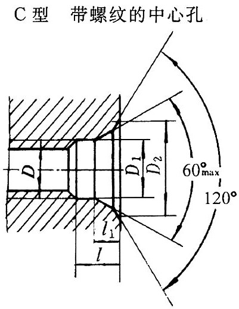

C型60°中心孔(摘自GB/T 145-2001) |
|||||||
D/mm |
D1/mm |
D2/mm |
l/mm |
l1（参考）/mm |
选择中心孔的参考数据 |
||
原料端部最小直径/mm |
轴状原料直径范围/mm |
工件最大重量/t |
|||||
M3 |
3.2 |
5.8 |
2.6 |
1.8 |
12 |
30～50 |
0.5 |
M4 |
4.3 |
7.4 |
3.2 |
2.1 |
15 |
50～80 |
0.8 |
M5 |
5.3 |
8.8 |
4 |
2.4 |
20 |
80～120 |
1 |
M6 |
6.4 |
10.5 |
5 |
2.8 |
25 |
120～180 |
1.5 |
M8 |
8.4 |
13.2 |
6 |
3.3 |
30 |
180～220 |
2 |
M10 |
10.5 |
16.3 |
7.5 |
3.8 |
— |
— |
— |
M12 |
13 |
19.8 |
9.5 |
4.4 |
42 |
220～260 |
3 |
M16 |
17 |
25.3 |
12 |
5.2 |
50 |
260～300 |
5 |
M20 |
21 |
31.3 |
15 |
6.4 |
60 |
300～360 |
7 |
M24 |
26 |
38 |
18 |
8 |
70 |
＞360 |
10 |
注：选择中心孔的参考数据为编者所加。